This started as the thing I needed while staring at holin oligomer predictions: a way to flip through forty models, see which regions were confident, put several of them side by side or on top of each other, draw on them, and get a figure out — without launching PyMOL, and without uploading unpublished coordinates to anyone's server.
Seven things to do with it
Each of these starts from a question and a structure anyone can load. Open this example opens the viewer in exactly the state pictured — same models, colours, labels, camera and panels — so you can follow along or just take it apart. The pictures follow this page's light or dark theme; so does the viewer, whose button beside Help switches between System (it follows your operating system, including a sunset schedule), Light and Dark.
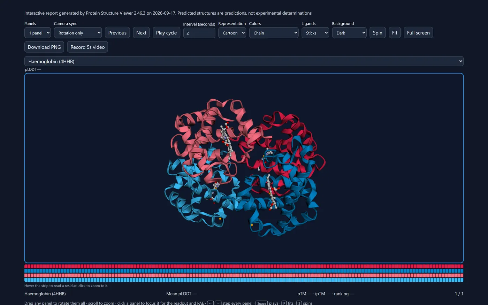

- 1Check an AlphaFold prediction
- 2Compare a prediction with experiment
- 3Explore a complex
- 4Annotate domains and residues
- 5Build a publication figure
- 6Share your work
- 7Compare many models
1. Check an AlphaFold prediction
Which parts of this model can I believe?
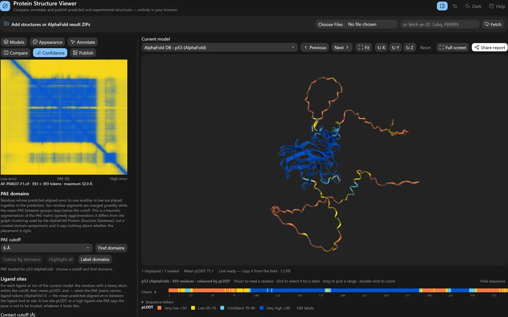
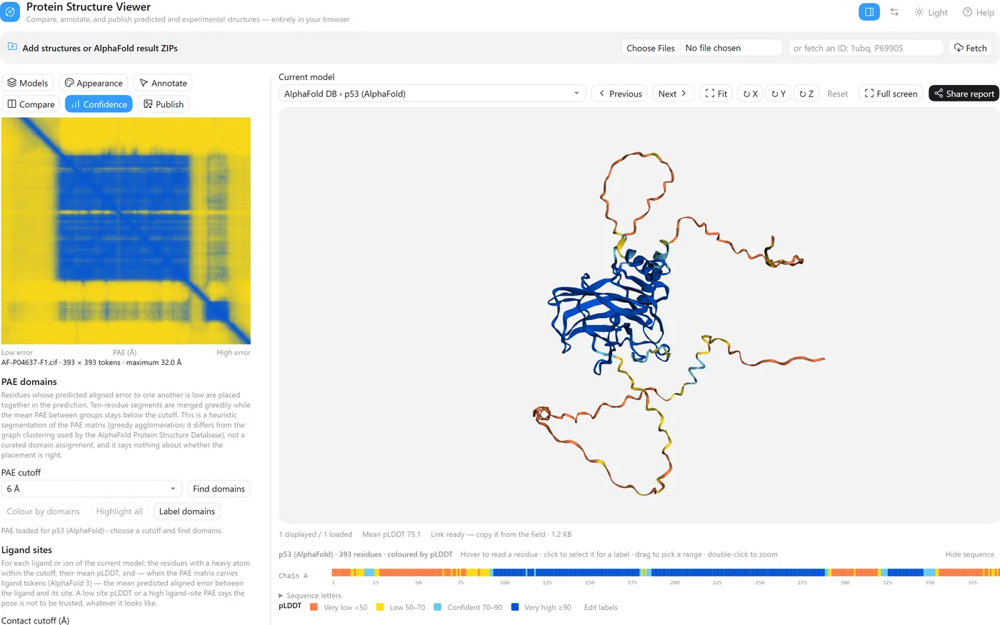
- Type
P04637and press Fetch — or drop your own AlphaFold result ZIP, which brings its PAE and ipTM along. - Appearance → Colour by → pLDDT confidence.
- Open Confidence: a low-error block on the PAE diagonal is a region whose internal arrangement is well predicted; high error between blocks means their relative placement is not.
- Appearance → Hide pLDDT below 70 leaves only what the model is confident about — in the view, the panels and every export.
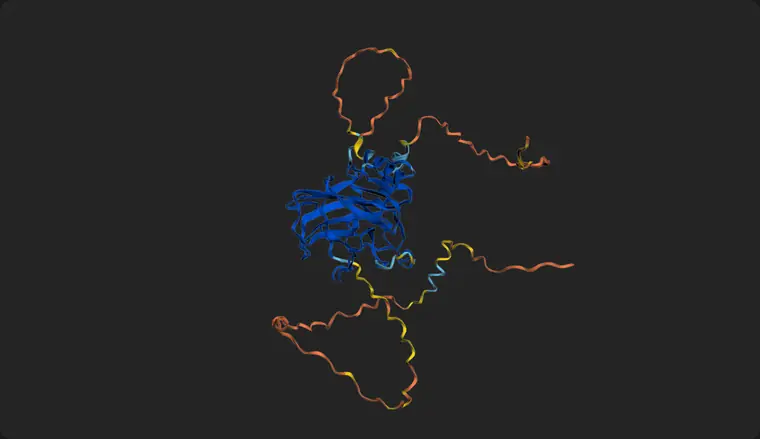
p53's DNA-binding domain is one confident block; the long termini are low confidence because they are intrinsically disordered, and the loops drawn there are not a structure to read. The small second block near the C-terminus in the PAE map is the tetramerisation region.
2. Compare a prediction with experiment
How close is the model to the crystal structure?
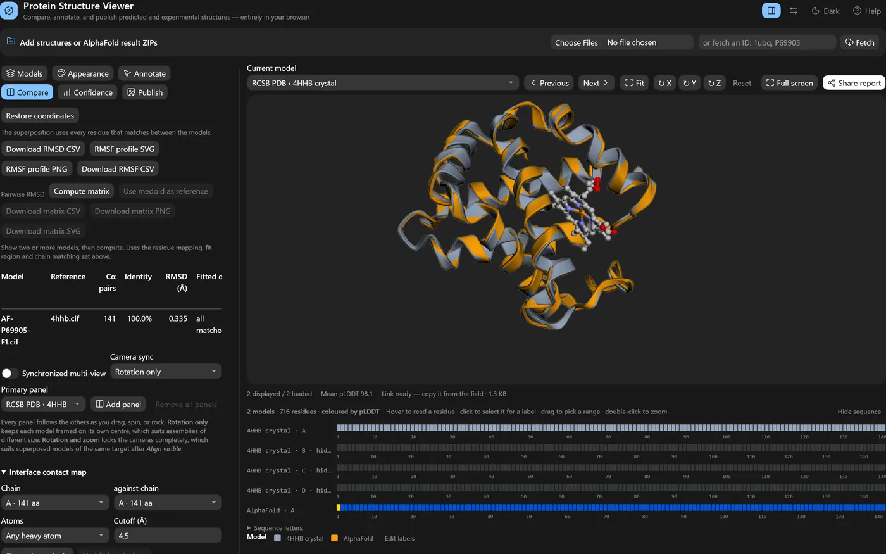
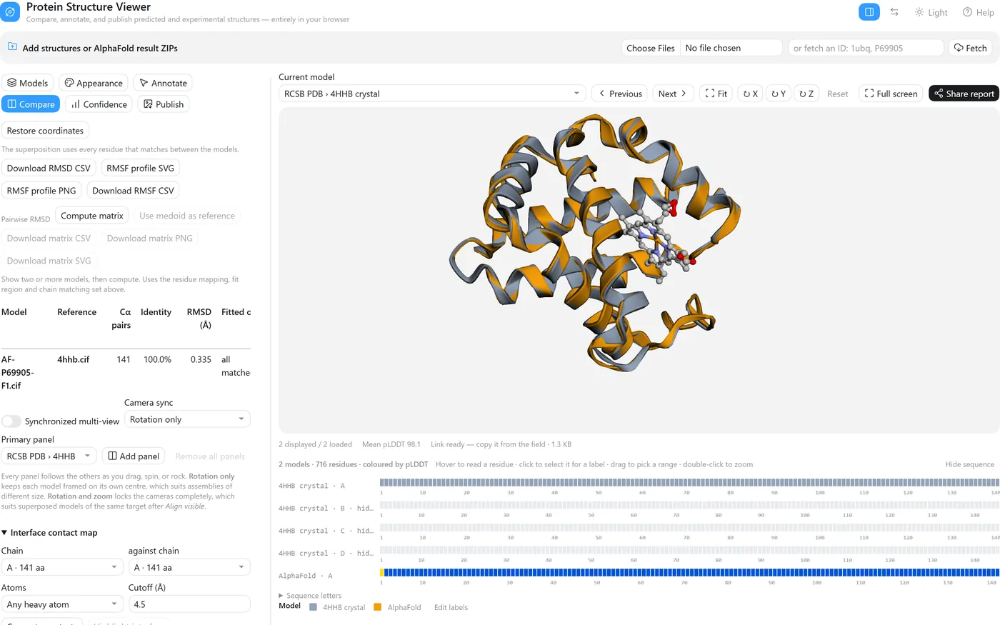
- Fetch
4hhbandP69905. - In Models, make the crystal structure current and untick chains B, C and D, so only the α chain the prediction corresponds to is shown; View mode → Overlay selected.
- Compare → Alignment reference: the crystal structure, then Align visible.
- Colour each model with its swatch in the Models list, or by Cα deviation after alignment.
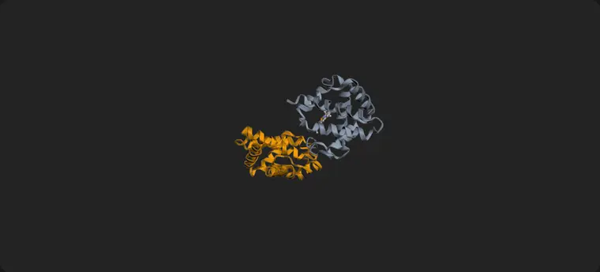
141 Cα pairs, 100% sequence identity, RMSD 0.335 Å — the prediction sits almost exactly on the crystal structure. AlphaFold DB numbers this model from the initiator methionine (1–142) while the crystal chain starts at the mature valine (1–141); the sequence-aware matching pairs them correctly regardless, and the RMSD is over those pairs.
3. Explore a complex
How is this assembly put together, and where do its ligands sit?
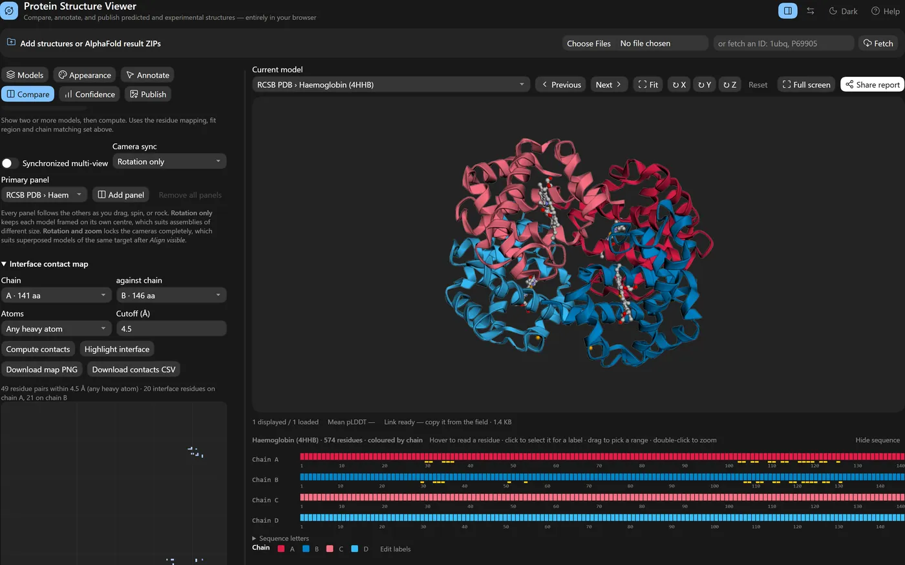
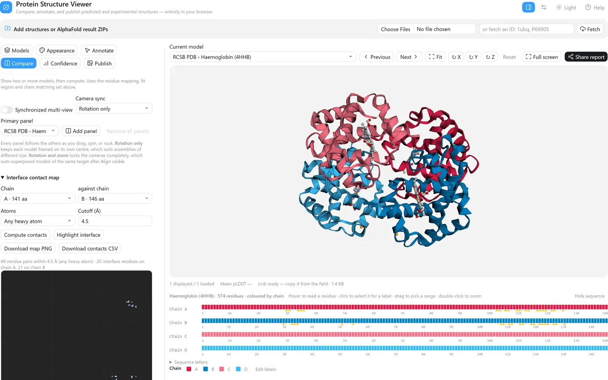
- Fetch
4hhb. Models → Composition lists the chains, the stoichiometry (α ×2, β ×2), the Cα extent and radius of gyration, and the ligands (HEM ×4, PO4 ×2). - Colour by → Per chain, then click a chain's swatch to give it a colour that means something. Double-click to reset; sessions and share links keep the colours.
- Compare → Interface contact map, chain A against chain B, Compute contacts, then Highlight interface. Here that is 49 residue pairs within 4.5 Å — 20 interface residues on chain A and 21 on chain B — marked on both sequence strips.
- Confidence → Ligand sites → Analyse ligand sites lists each bound group with its pocket residues (six here).
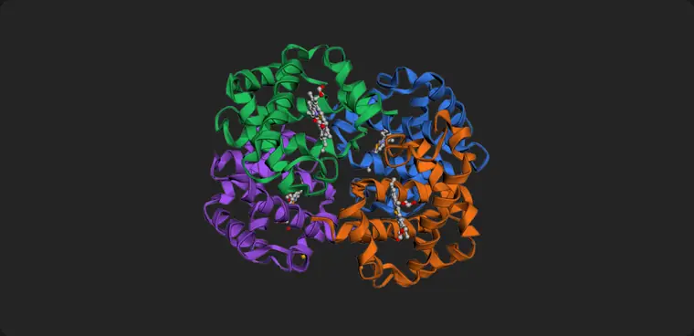
4. Annotate domains and residues
Mark up the regions and residues I care about.
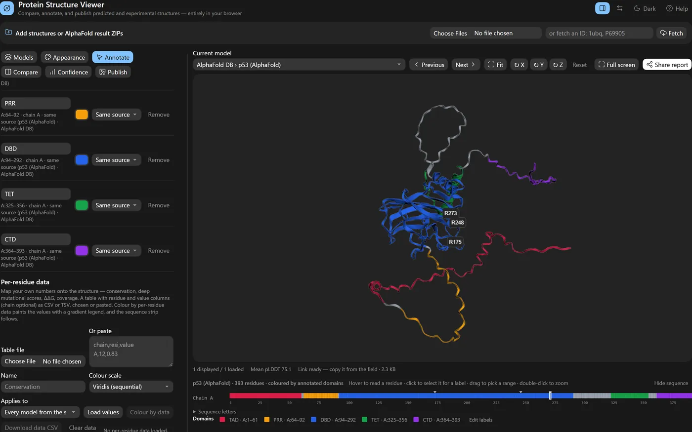
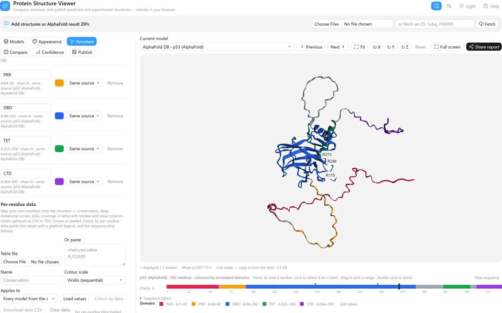
- Annotate → Domains: a name, chain, residue range and colour, then Add domain. Applies to can reach every model of the same AlphaFold run at once.
- Colour by annotated domains paints them and names them in the legend; Label domains writes each name on the structure.
- Go to
A:175selects and zooms to the residue; type the label and Add label. R175, R248 and R273 are among the positions most often mutated in human cancer. - Drag a label to move it — a leader line keeps it tied to its residue. Download architecture draws the domains as a linear diagram.
5. Build a publication figure
Get a figure out at the size and resolution the journal asks for.
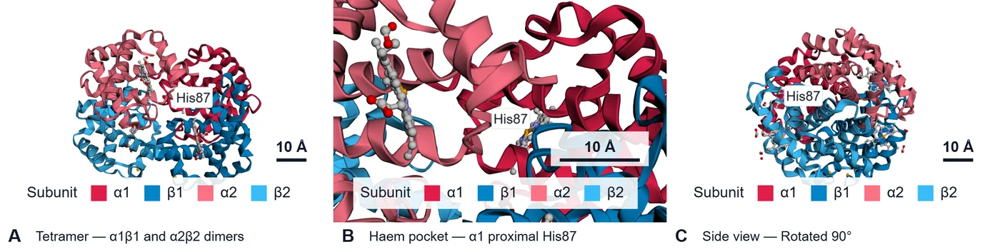
- Appearance → Background → White.
- Publish → Edit figure labels renames what the legend says —
ChaintoSubunit, A–D to α1, β1, α2, β2 — without touching the data. - A Journal preset sets width, dpi, text size and font in one choice; add a Scale bar.
- Save current view once per panel, then tick, order and caption them in the Figure builder and download PNG — or SVG, with the text still editable.
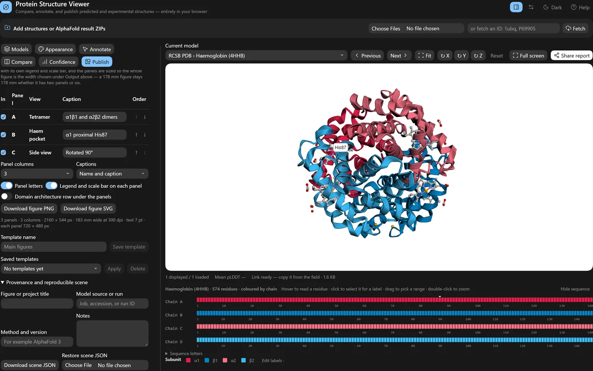
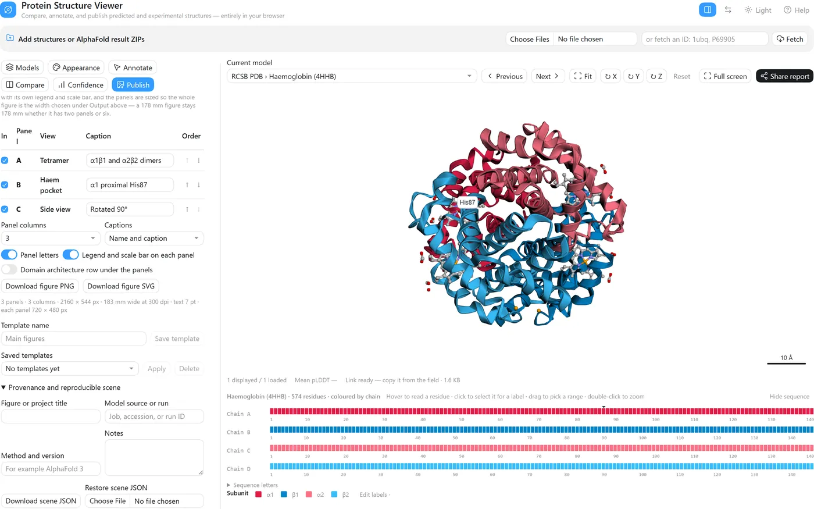
7. Compare many models
Which of these models agree, and where do they differ?
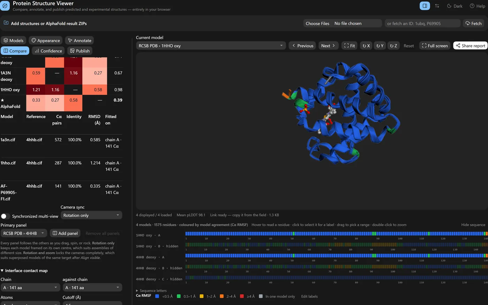
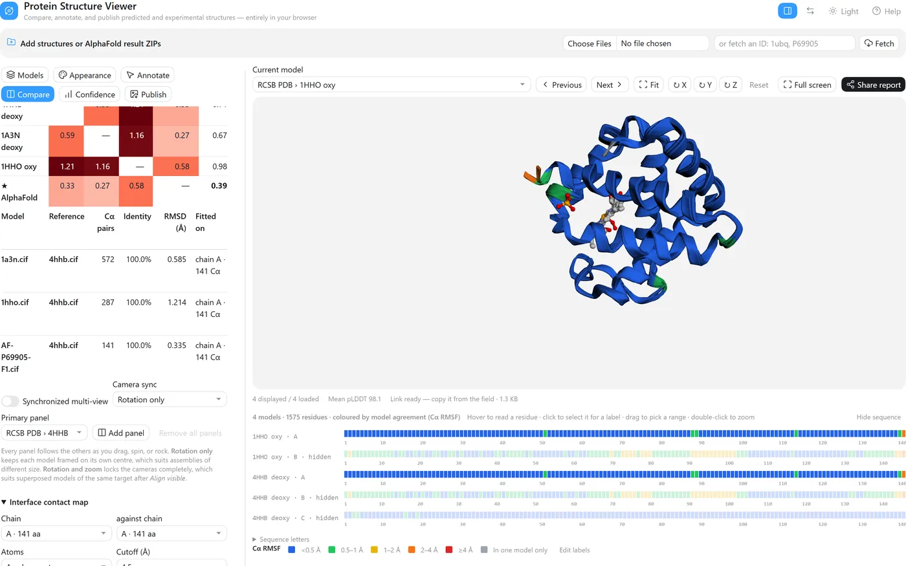
- Fetch
4hhb,1a3n,1hhoandP69905; hide all but chain A of the crystal structures; overlay. - Compare → Fit on → A chain or residue range…
A, then Align visible. - Compute matrix for the pairwise RMSD; Use medoid as reference re-fits on the most central model.
- Colour by → Model agreement paints each residue by how much the models disagree there.
Fitted on chain A, the AlphaFold model sits 0.33 Å from 4HHB, 0.27 Å from 1A3N and 0.58 Å from the oxy structure 1HHO, and it is the medoid — the model closest to all the others. (The crystal structures' own pairwise figures, 0.59–1.21 Å, count every chain they match, not only the chain fitted on.) Model agreement then says where they differ rather than by how much overall: 135 of 141 residues agree within 0.5 Å, and what stands out is the C-terminal Tyr140–Arg141 and residues 88–89 beside the proximal His87 — the parts that move when haemoglobin binds oxygen. Against deoxy 4HHB, the oxy structure's Arg141 sits 4.8 Å away and its 88–89 stretch 1.3–1.7 Å, while the second deoxy structure stays within 0.5 Å; the prediction, at 0.3–0.7 Å, sits with the deoxy pair.
The mistake the tool is built to make harder
pLDDT is the number everybody quotes, and it is per-residue and local. A model can average 96 and still have two domains in completely the wrong arrangement relative to each other, because pLDDT never had an opinion about their relative placement. For complexes this matters enormously: a high mean pLDDT across a predicted dimer tells you the two chains are each individually well-folded. It tells you approximately nothing about whether they actually touch the way the picture shows.
So the viewer puts predicted aligned error and interface confidence one tab away from the structure, not one folder away. Drop an AlphaFold result ZIP and it pulls the confidence JSON out of the archive itself: the PAE heatmap with chain boundaries drawn on it, per-token inspection on hover, chain-pair ipTM, chain-pair minimum PAE, pTM, ranking score, rank, clash flag. All of it exports to CSV with the file each number came from recorded next to it, because "where did this ipTM come from" is a question you will be asked six months later.
The interpretation guidance is in the tool, not just in the README. Press ? and the help panel says, in as many words, that high pLDDT is not evidence an interface is real. A tool that renders a beautiful predicted complex and stays silent about that is doing half a job.
Comparison that shows its work
Overlaying two predictions and quoting an RMSD is the most common way to make a comparison look more rigorous than it is. The number depends entirely on which atoms you paired, and that decision is usually invisible.
There are two pairing modes here and the tool always tells you which ran. Chain and residue IDs pairs Cα atoms with identical identifiers — strict, no heuristics, right when your models genuinely share a numbering scheme. Sequence-aware runs a global Needleman–Wunsch alignment between every reference chain and every target chain, then greedily assigns chain pairs by identity — which is what you need when two prediction runs disagree about chain order or numbering.
Either way the results table reports the aligned Cα count, the sequence identity, the chain mapping it chose, and the RMSD, and exports all of it as CSV. If the chain mapping looks wrong, the RMSD is wrong, and you can see that before you put it in a figure. For a homo-oligomer with near-identical chains the mapping is essentially arbitrary among equivalent chains, which is exactly the case where a bare RMSD misleads.
The report is the figure
Share report produces one HTML file with the coordinates embedded. Open it and you get the viewer, not a screenshot: pick models, step through them, cycle, follow the guided views and captions the author saved, read the pLDDT and PAE, export your own PNG. No server, no install, nothing to configure.
This is what I send to a collaborator instead of eleven PNGs and a paragraph explaining what they are looking at. It is also what a reviewer can be given so they can check the claim themselves rather than take the figure's word for it.
Alongside it there is a scene manifest: a JSON file recording a SHA-256 hash of every structure file, plus the camera, colours, labels, selections, measurements, saved views, alignment settings, and your provenance notes. Reload it a year later with the same coordinate files and you get the same figure; reload it with files that have changed and it says so, because it recomputes the hashes.
Comparing more than two, and drawing on the result
Version 2.2 adds the two things the first release could not do and a thesis chapter needs. The first is comparing several models at once. The comparison view now takes up to six panels — a primary and five more, each with its own model picker and name badge — and dragging, wheel-zooming, spinning, or rocking any one of them moves them all. That last part sounds trivial and was not: 3Dmol redraws a drag through a path that never fires its state-change callback, so the old two-pane view only matched the camera at the moment it was set up and drifted the first time you touched it. The panels are now kept in step by watching every camera once per frame.
What the cameras share is a choice, because the honest answer depends on what you are comparing. Rotation only — the default — shares orientation while each panel keeps its own centre and zoom, so a monomer next to a whole assembly both stay in frame. Rotation and zoom locks the cameras completely, which is what you want after Align visible has superposed models of the same target. Download comparison PNG then renders every panel at the export size you chose and stitches them into one lettered figure, with each model's name and mean pLDDT in a caption strip underneath.
The second thing is annotation, because a figure is an argument and the argument needs arrows. In the Annotate tab you pick a tool, press Start drawing, and click atoms: two for an arrow or a line, one for a translucent residue marker or a text callout on a leader line. Corner titles — panel letters, captions — go in as screen text. All of it is anchored to atoms, so it survives rotation and re-alignment, and it is drawn into the publication PNG, the comparison figure, every comparison panel, and the shared report — rather than added afterwards in a slide editor, where it drifts out of register the moment the view changes. Clicks now pick the nearest atom within a few pixels; before, in cartoon mode, you had to land exactly on a Cα sphere, which is why "click any atom" felt unreliable.
The report grew the same way. It opens with the panels you had open — one to six, synchronized, each with a model picker and its pLDDT and ipTM — steps every panel together, spins and fits them together, switches background, follows the guided views, and exports a stitched PNG or a composite video. If you aligned models before sharing, it carries the aligned coordinates rather than the raw file positions, so the reader sees the superposition you saw.
Since then the tool has grown the pieces that make a figure finished rather than merely exported. Models take a display name, so a caption reads "Round tip, model 0" instead of a file name. The pLDDT legend is drawn onto the exported figure. Every label can be nudged into place with arrow buttons and stays put when the model turns. The same figures export as SVG — the molecule as a raster, every label, arrow, caption, and legend as an editable vector layer — so typography can be finished in Illustrator or Inkscape without re-rendering. And the Confidence tab now analyses interfaces: inter-chain contacts at a chosen cutoff, interface residues per chain, and buried surface area by Shrake–Rupley, highlightable in one click and exportable with residue lists. It is geometry of the prediction as loaded — how the model is packed — and the interface says so; read it next to the chain-pair ipTM, not instead of it. Reports can now embed the rendering library so they open with no network, and compact or omit the PAE heatmaps to stay small.
The latest round is about working faster on residues. A sequence strip under the viewer draws every chain as a row of residues coloured by pLDDT: hover to read one, click to select it for a label, drag a range to fill the selection fields, double-click to zoom to it. Labelled residues and highlighted ranges are marked on the strip, so it doubles as an index of what a figure annotates. Every label, selection, measurement and annotation change now has undo and redo. Chain colouring uses a fixed palette named in the legend, so chain A is the same blue in every panel and in the report. And for structures fetched by identifier there is a share link: the scene — camera, colours, labels, annotations — compressed into the URL fragment, so a reviewer opens the exact view without a file changing hands. Local files stay local; the link simply cannot carry them.
Two additions answer the question that follows any comparison: where do the models disagree? After aligning, a Cα deviation colour scheme paints each residue by its distance from the reference — blue under an ångström, red at eight or more, grey where nothing matched — in the viewer, the panels, the strip and every export. And a pLDDT profile figure plots per-residue confidence for every displayed model, one panel per chain with the standard bands shaded behind, as editable SVG. A one-click cut hides residues below pLDDT 50 or 70 everywhere at once, which is how most AlphaFold figures lose their disordered tails.
The rest is about getting the figure out. Ligands, ions and glycans — which cartoon mode silently drops — are drawn as sticks by default. The view rotates in exact 90° steps from the keyboard, so a front, side and top panel line up. Three presets set up a thesis figure, a dark slide or a confidence review in one click. The displayed models export as FASTA. And a figure legend writer drafts the legend from what is on screen: models, colour bands, cut-offs, alignment RMSD, labels and measurements, ready to be edited into your own words.
And the sequence itself is now readable, not just drawn. A sequence letters panel prints each chain in blocks of ten with residue numbers, every letter a chip in the current colour scheme, click to select, copy per chain. The schemes grew to cover what a residue is: charge, Kyte–Doolittle hydrophobicity, residue type, amino acid, secondary structure — each with a legend — and a translucent molecular surface can wear any of them, which is as close to an electrostatics view as a look-up table honestly gets. The legend writer says exactly that, so nobody mistakes it for a Poisson–Boltzmann map.
For assemblies, a composition table now lists every chain of the current model — length, range, mean pLDDT — with a switch to hide it everywhere at once, and counts the ligands and ions. A Go to box takes a residue by number, because that is how reviewers ask. The publication figure can be copied straight to the clipboard. And the shared report caught up with the viewer: the same colour themes, the same ligand handling, the same hidden chains.
The predicted aligned error matrix is the most informative and least read output of a prediction. A PAE domains tool now reads it: residues that the model places together — low PAE to one another — are merged into groups, listed with their ranges and mean internal error, highlighted in one click or used as a colour scheme. For an assembly this shows which subunits the model treats as a rigid unit and which it merely places nearby. And reviewers get the sequence strip too: every panel of the shared report carries one, with hover-to-read and click-to-zoom. And domains can be named: a region, a colour, and a scope — this model, every model of the run, or everything loaded — so that "the N-lobe in blue" means the same thing in every panel, every export and the report, with a legend that says so.
Finally, output that a journal accepts as it is. Exports are now specified the way a figure is: a width
in millimetres, a resolution in dpi, text in points — and the file says so, with the resolution written
into the PNG or TIFF and text kept as text in the SVG. A scale bar, a colour-blind-safe palette and a
journal font are each one control. And the tool itself is citable: a CITATION.cff, a Zenodo
archive of every release with a DOI, and a "How to cite" in the help that gives both the viewer and
3Dmol.js their due.
Two more things a working day needs. Your own numbers can go onto the structure — a CSV of residues and values, conservation or mutational scores or ΔΔG — as a colour scheme with a gradient legend that states the range, applied across every model of a run. Residues within a chosen distance of a ligand, a chain or a clicked residue are one click to highlight and one to copy. And the session autosaves in the browser, so a closed tab is not a lost afternoon.
And two questions that a run of five models should answer before a figure is made: where do the models disagree, and is that ligand pose real? A model agreement colour scheme paints each residue by its Cα spread across the aligned models, and a ligand sites table gives every ligand its contact residues, their pLDDT, and — for AlphaFold 3 — the predicted aligned error between ligand and site.
Assemblies now read as assemblies. Colouring by entity gives every copy of the same protein one colour, so a sixty-copy capsid shows its two or three proteins and the legend reads like a stoichiometry; the composition table gives extent and radius of gyration in nanometres. And a sequence motif — a regular expression over one-letter codes — is highlighted in every chain at once.
Then the question a research tool has to answer: are the numbers right? I wrote an independent reference in Biopython and numpy — Kabsch RMSD, per-residue RMSF, radius of gyration, maximum Cα–Cα distance, residue contacts — and drove the viewer on the same three real runs: an M13 virion tip with fifteen chains, an MS2 maturation-protein–coat complex and a phiX174 F–G complex. Seventy-two comparisons, every one within 0.00005 Å, which is the rounding of the reference. One thing did not survive the check: the assembly "extent" was a two-pass estimate that under-read real assemblies by up to five per cent, and it is now the exact distance. The same pass made the biggest runs fit. An AlphaFold 3 confidence file carries a contact-probability matrix the viewer never used, and parsing a 175 MB file whole for the one matrix it did need cost 2.2 GB of memory on a five-model sub-complex. The file is now scanned byte by byte and that run holds a fraction of a gigabyte. And a methods text button writes the paragraph a paper needs: what was superposed on what and how, what RMSD means here, how the domains were cut, in the past tense, with versions, so the Methods section says what was actually computed.
And the request that followed the same afternoon: save the work as a file. A session file is one ZIP with the models, every confidence matrix, the alignment, annotations, domains, views and settings; drop it on the page on any machine and the afternoon is back exactly where it stopped.
Version 2.16.0 fixed the thing that had quietly annoyed me most: scrolling down to change a colour or add a label and losing sight of the model. On a wide screen the viewer is now a workspace. The six tool tabs sit in a panel on the left that scrolls on its own; the 3D view, the status line and the sequence strip stay pinned beside it, so every change is visible the moment it is made. The stage grows to fill the window, the divider between the columns drags to give tables more room, and a header button flips back to the stacked layout for anyone who prefers it. Narrow screens keep the single column.
Then a pass on the figures themselves (2.17.0). A silhouette outline around every element is what keeps overlapping chains readable when a figure shrinks to column width; it is one setting now, thin or bold, drawn in every panel and export. Depth cueing fades the far side of an assembly. A chain can be faded into the background to spotlight the others without removing the context. Journal presets set the print width, resolution, text size and font from the figure guides of Nature, Science, Cell Press, PNAS, PLOS and eLife. And one panel per model renders the five models of a run from the same camera into a single lettered figure, which is the figure a reviewer asks for first.
And the thing the post above said was next: a contact map (2.18.0). Pick two chains of a model and a cutoff, and every residue pair whose atoms come within it becomes a cell, closer pairs darker, the first chain down the side and the second along the top. Hover reads the pair and the distance, a click selects both residues in 3D, one button highlights the whole interface, and the map and the pair list download as a 300 dpi figure and a CSV. The methods text states the rule and the counts. It was checked against Biopython the same evening — on the three real runs, every residue pair and every distance agree to the rounding of the reference — and the tool says plainly what it cannot say: that a predicted interface exists. For that, read it beside the inter-chain PAE.
The last addition of the day is the smallest and may be the most used: a publication checklist at the foot of the Publish tab (2.19.0). The viewer reads its own settings and says what a figure guide or a careful reviewer would say — the export has no physical size, the text is under 7 pt, the chain colours are not colour-blind safe, the legend is off, the scale bar is in perspective, three models are shown without superposition, there is no title — each with a one-click fix. It is a checklist, not a judge, and it reads ready when nothing is left.
One more (2.20.0), because the pieces were all there: a composite figure. The 3D view, the PAE heatmap, the pLDDT profile and the contact map, rendered fresh at print resolution and stitched into one lettered figure with captions — the confidence panel most AlphaFold papers need, in one download.
And a late one that had been hiding in plain sight (2.21.0): every AlphaFold 3 archive carries the
multiple sequence alignment the model was built from, and nobody looks at it. The viewer
now reads the .a3m, maps it onto the matching chains and colours them by conservation, identity
to the query or coverage — the same per-residue pipeline as any pasted table, so the legend, the exports and
the methods sentence come free. Read the coverage first; a conserved column with eleven sequences behind it is
not saying much.
Parity, finally (2.22.0): the shared report a reviewer opens now shows the outline, the depth cueing, the faded chains and the contact map exactly as they were on my screen. A report that quietly drops half the styling is a report that argues with its own figure.
It now has a DOI. Version 2.22.0 is archived on Zenodo as
10.5281/zenodo.22741488; the concept DOI
10.5281/zenodo.22741487 always resolves to the latest
release. If the viewer helps with a figure, cite it — the repository's CITATION.cff has the
reference in every format.
Then the unglamorous part that turns a prototype into software (2.23.0), done with Claude supervising a team of smaller models on separate files: continuous integration that runs the 130-step suite in three browser engines on every push; a source tree from which the single HTML file is generated byte for byte, with a drift check; a real fixture — a committed AlphaFold Database entry — in the tests, which immediately caught a bug (files downloaded from AlphaFold DB did not pair with their PAE); and buried surface area cross-validated against Biopython, bringing the checked quantities to 123. Ligand-site PAE is the one number left unvalidated, for want of a run with a ligand in it, and the validation record says so.
Two honesty fixes followed (2.24.0). Conservation from an alignment now uses Henikoff position-based sequence weights before the column entropy, so fifty near-identical homologues do not masquerade as fifty independent observations; a switch gives the plain entropy, the legend and methods text say which was used, and both are cross-validated — the two differ by up to 0.32 at some columns of the phiX174 alignments, which is the difference between "invariant" and "moderately conserved". And every heuristic the viewer computes now says so where you read it: the PAE-domain panel and legend are labelled heuristic, and the ligand-site table says its PAE column is an unvalidated summary.
And a small thing that turned out to matter for every figure (2.25.0): the legend's words are now yours to edit. A PAE domain is "D1" to the algorithm and "N-lobe" to the paper; an entity is "α" to the parser and "coat protein" to the reader. Edit labels on the legend renames the title and entries once, and the change follows into every export, the SVG, the composite figure and the generated legend text, while the data underneath stay exactly as computed. The names live in the scene, so a saved session or a share link reads the same way.
Then the piece that closes the loop between "viewer" and "figure" (2.26.0): a figure builder. Saved views are the panels. Tick the ones to include, order them, caption them, choose the columns, and download one lettered figure — PNG with the resolution in the file, or SVG with every caption, label and legend as editable text. Each panel is rendered from its own camera and colour scheme at the same text size, and the panels are sized so the figure is exactly the journal width you chose: 178 mm with two panels or six. It also caught a bug of its own on the way — the all-views ZIP had been drawing each file's legend from the view on screen rather than the view in the file.
The domain figure itself came next (2.27.0). Colouring by domain and listing the domains in a legend is not what a reader sees in a paper: the names sit on the structure, and a linear architecture bar sits under it. Label domains writes each name at the domain's centroid in its colour, using the legend's names, as an ordinary label that exports and shares like any other; Download architecture draws the bar — one row per chain, coloured boxes with names, residue numbers at the boundaries — and the same bar is a composite panel and an optional row under a figure-builder figure. One set of domain definitions, three views of it, all in agreement.
Last, the two things that make a figure yours rather than the tool's (2.28.0): labels you can drag and a legend you can place. Pick up any label in the view and put it where it belongs; a residue label keeps a leader line back to its residue, and because the move is stored against the structure rather than against the screen, turning the camera does not scatter the arrangement. The colour legend now goes in any corner or stacks down either side, on every export and every panel. Small things, but they are the difference between exporting a picture and finishing a figure.
And the measurement that matters most when you overlay two predictions (2.29.0): which part you fit on. Superposing on everything and reading one RMSD hides the interesting case — a rigid core with a domain swung out. Fit on now takes a chain, a residue range or your current selection, computes the rotation from that alone, and reports both numbers side by side: the RMSD over the region you fitted and the RMSD over everything matched. Colour by Cα deviation and the figure says the rest.
Two more things an overlay of five predictions turned out to need (2.30.0, 2.31.0). First, honesty about which chain is which: in an assembly of identical subunits every chain pairs equally well by sequence, and AlphaFold does not keep the copies in the same order between models, so the viewer had been measuring subunits against the wrong partners. Match identical chains by position re-pairs them after a first fit; on my own M13 tip models it cut the apparent disagreement from 19–28 Å to 12.5–13 Å, and the mapping it chose is printed with every number. Second, readability: Emphasise draws one model solid and the rest as faded thin ribbons, so the overlay reads as a subject against context instead of a tangle.
And the panel every ensemble figure ends up needing (2.32.0): a pairwise RMSD matrix. Every shown model superposed onto every other with the same rules as the alignment, tabulated with a heat tint, exportable as CSV and as a heat map with the values in the cells. It answers the question the overlay only hints at — which models agree with which — and it goes straight into the composite figure. On my own M13 tip run it said something I had not noticed: the top-ranked model is the outlier, 13 Å from every other, while models 1–3 agree to 6–8 Å. The matrix now marks the medoid — the model closest to all the rest — and one press superposes everything onto it and draws it solid (2.33.0). Show the consensus, not the rank. And because a matrix says how much the models disagree but not where, the RMSF profile (2.34.0) plots the per-residue spread, one panel per chain with the agreement bands behind it, as SVG, PNG and a composite panel. And because "submit your figures as PDF" is a sentence every author meets, the figure now saves as PDF at exactly the physical page size you asked for, beside PNG, TIFF, JPEG and WebP — with the checklist telling you when you have picked a lossy one (2.35.0).
Then the question a mutation study actually asks (2.36.0): I ran the wild type and the mutant, now what sits at that position in each? Compare this position takes the selected residue and, in every shown model, draws the side chain there, writes that model's own residue on it — Ala15 on one, Gly15 on the other — and states the difference in one line. It matches by chain and residue number, which is exactly what two runs of the same sequence share, and it says so in the methods text.
And what the substitution did (2.37.0): after superposing the two runs, the same button reports how far the Cα at that position moved between wild type and mutant, finds every residue within a chosen radius of the site, and tabulates how far each of those moved — with a highlight, a CSV, and a sentence for the legend. Corresponding residues are found through the alignment pairing, so a run with an insertion still compares the right residues. The agent that built it also caught a bug in mine: a rejected chain re-pairing had been leaving the model in the rejected fit.
And then the figure itself (2.38.0). Every mutation paper draws the same two panels — where the site is, and what it looks like up close — so Make site figure draws them from the comparison in one press: an overview of the superposed models with the site marked, and a close-up on the compared residue with the side chains, each model's own residue labelled, the wild type solid and the mutant faded behind it. Both land in the figure builder as the only two panels, lettered and captioned, with Publish open at the download button. Saved views now remember which models were faded, and undo takes the whole press back.
Three more followed in one sitting (2.39–2.41), because a mutation is rarely one residue and a paper is rarely one
figure. Compare these positions takes a range — K:20-30, K:45 — and measures the whole
set at once, with a single neighbourhood table covering every site and counting no residue twice. Figure
templates save the presentation alone — columns, captions, letters, legends, output width, dpi, text size,
font — under a name, so figure 2 matches figure 1 without anyone remembering what figure 1 was set to; no models,
cameras or file names travel with it, so a template is safe to apply to a different project. And the site figure
grew a third panel: the same close-up coloured by Cα deviation from the reference, blue under 1 Å through red at 8 Å
and over, which on the M13 tip shows immediately that fitting on one chain leaves the distant subunits far apart.
Then a loop that set out to fix a cosmetic annoyance and found a real one underneath. Two labels at the same site overlapped in the exported figure, so I had an agent separate them — and its measurements said the placement was never the problem. At 300 dpi and 8 pt the export scales label text by 2.78 while the panel geometry is only 1.11× the stage, so labels print about two and a half times larger relative to the structure than they look on screen: a pair that clears by a fraction of a pixel in the viewer overlaps by half a box on paper. Worse, a label's offset is one model-space vector shared by every panel, so the 11.5 Å that separates them in the overview throws the same label clean off the close-up. The fix (2.44.0) resolves label placement per panel, in that panel's own projection and text size, at render time — the figure comes out right and what you arranged on screen is untouched. It only takes the new placement when it demonstrably covers less; on a panel with twenty-two labels in it, nudging cannot help, and the honest answer is fewer positions per panel.
Then 2.46, which began as a small request — let a chain be whatever colour a figure needs, from the
composition table or straight from the figure-label editor — and turned into an argument for making
demos. Having an agent drive the viewer through a scripted run-through for the pictures on this page
turned up four things I had not seen. A structure fetched from the PDB was coloured as though its
crystallographic B-factors were pLDDT, so an experimental structure read as a poor prediction, and the
exported report printed a mean pLDDT for it. The chain colours I had just added were forgotten
on reload and absent from share links. Model agreement pooled residues by number, and
AlphaFold DB counts α-globin from its initiator methionine while the crystal structures start one residue
later — so four structures that agree to a few tenths of an ångström were painted as disagreeing by more
than one, uniformly, along the whole chain. And every label in the 3D view had quietly become a black box
on a black background, because the interface's colours are now CSS expressions — light-dark(),
color-mix() — that 3Dmol reads as black. None of the four could fail a suite that checks
numbers rather than pictures, on fixtures that all share one residue numbering. They are fixed in
2.46.1 through 2.46.3, each with a regression test, and the build now refuses to write a file whose
script does not parse, which is how I broke the whole viewer for ten minutes with one apostrophe.
Three bugs worth naming
The recent pass over this was mostly unglamorous correctness work. Three are worth writing down because they are the kind that look fine in casual use and bite in real ones.
Exporting a figure could kill the viewport
Rendering a publication PNG happens off-screen, at full resolution, in a second WebGL context. Browsers cap
how many live WebGL contexts a page may hold — commonly eight to sixteen — and when you exceed it they
silently discard the oldest. Every export was creating a fresh context and never releasing it, so a
six-panel contact sheet would quietly destroy the main viewer's context somewhere around panel six. The fix
is one reusable off-screen target, explicitly released with WEBGL_lose_context when the job
finishes.
Dropping a file half an inch off target lost the session
The drop handler was attached to the upload card. Drop a PDB anywhere else on the page and the browser did its default thing: navigated to the file and threw away everything you had loaded, annotated, and aligned. Drops are now accepted across the whole window, and the default is suppressed everywhere regardless.
Fetching by accession was asking for a file that no longer exists
Database fetch built AlphaFold DB URLs by appending _v4 to the entry name. AlphaFold DB is on
v6. Every accession lookup would have 404'd. It now asks the EBI API for the current URLs, which also means
it can pull the entry's predicted-aligned-error file in along with the coordinates.
What it loads
| Input | What happens | Needs network? |
|---|---|---|
| .pdb / .cif / .mmcif | Loaded as a model, read locally | no |
| AlphaFold result .zip | Every model extracted and grouped by archive; template hits ignored | no |
| Confidence JSON / ranking CSV | pTM, ipTM, ranking score, rank, clash, PAE attached to matching models | no |
| Scene manifest JSON | Whole annotated scene restored, with hash verification | no |
1ubq | Fetched from RCSB | yes |
P69905 / AF-P0DTC2-F1 | Fetched from AlphaFold DB, with its PAE data | yes |
Privacy, stated precisely
Files you open are read by the browser and never leave the machine. The page makes network requests in exactly two situations, and it is worth being exact rather than waving at "privacy-first":
- On load, for the three pinned libraries (3Dmol.js, JSZip, numeric.js) from one CDN. All three carry Subresource Integrity hashes, so a tampered or substituted file refuses to execute.
- When you type an identifier and press Fetch, to RCSB or EMBL-EBI. That request carries only the identifier you typed.
A Content-Security-Policy restricts the page to those origins and nothing else. The icon set and tooltips used to be two more CDN downloads; they are inline now, which removed about 600 KB and two third-party origins, and means the interface renders correctly even when the network does not cooperate.
What it is not
It is not PyMOL or ChimeraX, and it is not trying to be. There is no molecular dynamics, no density fitting, no ray tracer, no scripting language. It does not compute buried surface area or contact maps yet — that is the next thing I want, for exactly the holin-interface question that started this.
And it does not turn a prediction into a result. Aligning two models and getting a small RMSD means two predictions agree with each other, which is a much weaker statement than either being correct. The tool is built to keep that distinction visible; it cannot make it for you.
Open it with one of your own models
No install, no account, no upload. Drop a PDB, or type 1ubq and press Fetch.